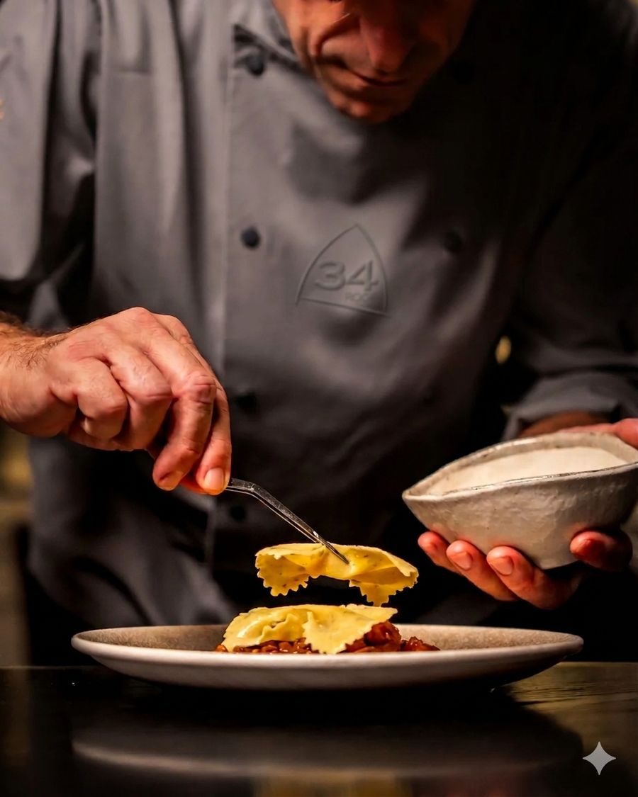
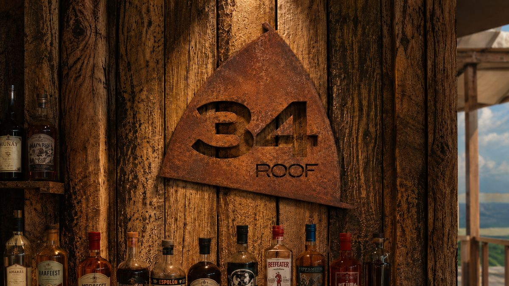
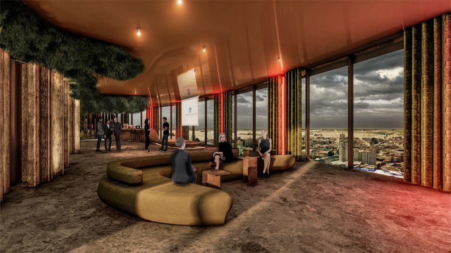
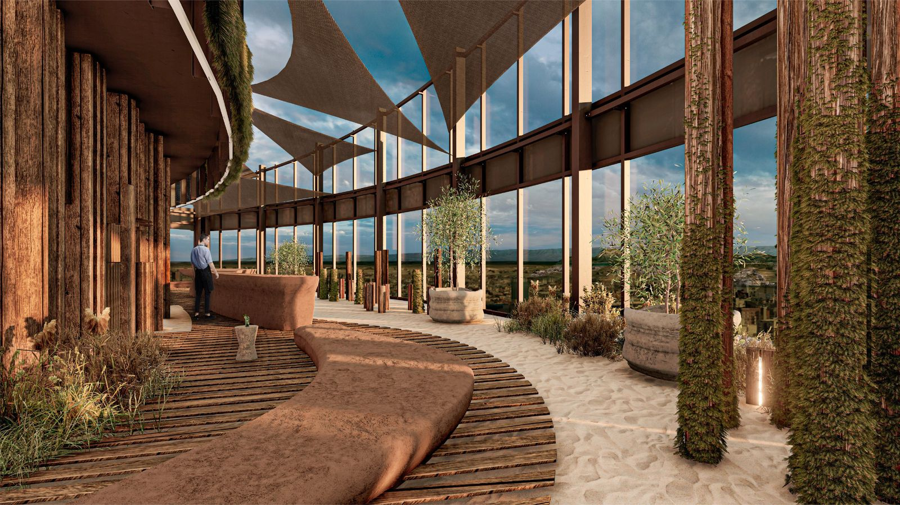

Cocina
Desayunos y almuerzos de 8 a 15 hs, con platos pensados para disfrutar sin apuro.
Ver el menú
Un mirador 360° en el piso 34, rodeado de materiales nobles.
34 Roof es un restaurante en las alturas de Córdoba, en el piso 34, con vista panorámica de la ciudad en todas las direcciones. Todo el espacio se pensó para transmitir la sensación de estar rodeado de naturaleza.
Por eso elegimos materiales que se ven y se tocan: madera, plantas, piedra, cuero y cemento. Sus tonos, verdes, beige y chocolate, están presentes en cada rincón del lugar.

Desayunos y almuerzos de 8 a 15 hs, con platos pensados para disfrutar sin apuro.
Ver el menú

Ventanales de punta a punta y una terraza para mirar Córdoba desde las alturas.
Reservar mesaTodos los días de 8 a 15 hs. Código de vestimenta: smart casual.
Reservar ahora